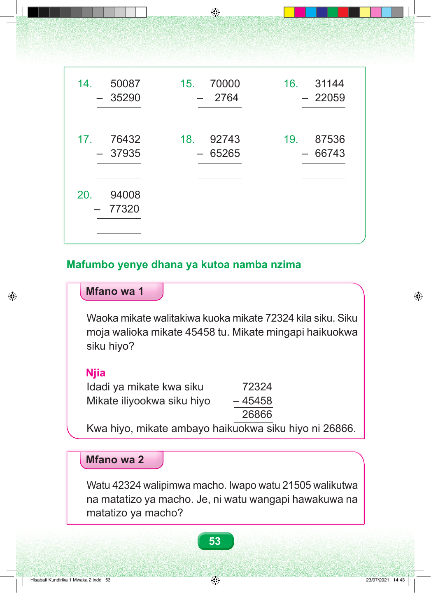

14. 50087 15. 70000 16. 31144 – 35290 – 2764 – 22059 17. 76432 18. 92743 19. 87536 – 37935 – 65265 – 66743 20. 94008 – 77320 Mafumbo yenye dhana ya kutoa namba nzima Mfano wa 1 Waoka mikate walitakiwa kuoka mikate 72324 kila siku. Siku moja walioka mikate 45458 tu. Mikate mingapi haikuokwa siku hiyo? Njia Idadi ya mikate kwa siku 72324 Mikate iliyookwa siku hiyo – 45458 26866 Kwa hiyo, mikate ambayo haikuokwa siku hiyo ni 26866. Mfano wa 2 Watu 42324 walipimwa macho. Iwapo watu 21505 walikutwa na matatizo ya macho. Je, ni watu wangapi hawakuwa na matatizo ya macho? 53 Hisabati Kundirika 1 Mwaka 2.indd 53 23/07/2021 14:43